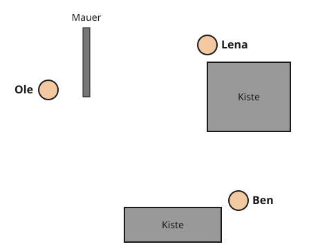
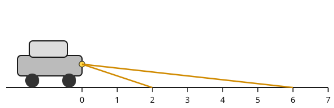

Wer sieht wen? Was wird hell?
Mit einem KI-Tutor lernen
Ein KI-Tutor erklärt dir diese Seite und hilft dir bei den Übungen. Wähl deinen Assistenten:
Mit Claude öffnen Mit ChatGPT öffnen Mit Mistral Vibe öffnen
Du nutzt dein eigenes Konto beim Anbieter. Der Assistent ist kein Angebot von lernapps.net: lernapps liefert nur Inhalte und Übungen. Die Wahl gilt für alle Seiten, nur auf diesem Gerät.
Wo verstecke ich mich?
Beim Versteckspielen weißt du es ganz von selbst: Hinter einer Mauer sieht dich keiner. Das liegt daran, dass Licht geradeaus geht und nicht um die Mauer herum.
Nach dieser Seite kannst du mit geraden Linien bestimmen, wer wen sieht und welcher Bereich beleuchtet ist. Du brauchst dafür: Licht breitet sich geradlinig aus, und man zeichnet es als Lichtstrahl.
Mit dem Lineal prüfen
Wer sieht wen? Verbinde die beiden mit einer geraden Linie, der Sichtlinie. Liegt nichts dazwischen, kommt Licht vom einen zum anderen: Sie sehen sich. Liegt ein Hindernis auf der Linie, sehen sie sich nicht.
Was wird hell? Zeichne von der Mitte der Lampe Strahlen an den Kanten der Hindernisse vorbei. Was zwischen diesen Randstrahlen frei liegt, wird beleuchtet. Dahinter liegt Schatten.
Das gilt auch im Großen: Beim Sonnenuntergang verschwindet die Sonne hinter dem Horizont, die Erde selbst ist dann das Hindernis. Wer höher ist, auf einem Berg oder in einem Flugzeug, liegt noch eine Weile im geraden Sonnenlicht.

Ole, Lena und Ben spielen Verstecken. Lege das Lineal von Kind zu Kind.
Quelle: eigene Zeichnung. Lizenz: CC-BY-4.0.So liest du die Zeichnung: Du schaust von oben. Die Kreise sind die Köpfe der Kinder, die grauen Flächen Mauer und Kisten. Prüfe jede der drei Verbindungen einzeln.
Merke
Weil Licht geradeaus geht, kannst du mit dem Lineal bestimmen, wer wen sieht und was beleuchtet wird. Liegt ein Hindernis auf der geraden Linie, kommt dort kein Licht an.
Beispiel
Abblendlicht beim Auto
Das Lichtbündel eines Scheinwerfers hat einen oberen und einen unteren Randstrahl. Beim Abblendlicht zeigen beide nach unten zur Straße.
- Lies ab, wo der untere Randstrahl die Straße trifft: bei 2 m. Davor ist die Straße dunkel.
- Lies ab, wo der obere Randstrahl die Straße trifft: bei 6 m. Weiter kommt das Licht nicht.
- Beleuchtet ist also die Straße von 2 m bis 6 m.
Beim Fernlicht zeigt der obere Randstrahl fast waagrecht nach vorn und trifft die Straße nicht. Das Licht reicht sehr weit, blendet aber entgegenkommende Fahrer. Deshalb fährt man meist mit Abblendlicht.

Abblendlicht. Lies ab, wo die zwei Randstrahlen die Straße treffen.
Quelle: eigene Zeichnung. Lizenz: CC-BY-4.0.Übung
Übung
Lösung
niemanden richtige Antwort
Die Linie zu Ole geht durch die Mauer, die Linie zu Ben durch die große Kiste.
nur Ole
Lege das Lineal von Lena zu Ole. Die Mauer neben Ole liegt auf der Linie.
nur Ben
Lege das Lineal von Lena zu Ben. Die große Kiste unter Lena liegt auf der Linie.
Ole und Ben
Beide Linien von Lena aus gehen durch ein Hindernis.
Lena ist von Ole durch die Mauer und von Ben durch die Kiste verdeckt. Ole und Ben sehen sich dagegen.
Mehr dazu:
Übung
Lösung
nur aus Fenster C richtige Antwort
Die Linie von der Lampe zu C geht über die Mauer hinweg. Die Linien zu A und B treffen die Mauer.
aus Fenster A und B
A und B liegen tief. Die Linie von der Lampe zu ihnen geht durch die Mauer.
aus allen drei Fenstern
Die Mauer versperrt die geraden Wege zu A und B.
Nur der gerade Weg von der Lampe zu Fenster C geht über die Mauer. A und B liegen im Schatten der Mauer.
Mehr dazu:
Übung
Lösung
Wand 1 wird zuerst beleuchtet, danach Wand 2. Man merkt den Unterschied aber nicht. richtige Antwort
Licht braucht für jeden Meter etwas Zeit. Bei 300 000 km pro Sekunde sind das nur Milliardstel Sekunden.
Wand 1 und Wand 2 werden genau gleichzeitig beleuchtet.
Licht ist sehr schnell, aber nicht unendlich schnell. Für den weiteren Weg braucht es ein winziges bisschen länger.
Wand 2 wird zuerst beleuchtet, danach Wand 1.
Wand 2 ist weiter weg. Das Licht braucht dorthin länger, nicht kürzer.
Das Licht erreicht die nähere Wand zuerst. Der Unterschied ist so klein, dass niemand ihn bemerkt.
Mehr dazu:
Übung
Lösung
Richtige Antwort: 4 m
Der untere Randstrahl trifft die Straße bei 4 m. Ab dort ist sie hell, und weil der obere Randstrahl die Straße nicht trifft, reicht das Licht sehr weit.
Mehr dazu:
Offene Aufgabe
Die Sonne ist untergegangen, trotzdem siehst du hoch am Himmel ein hell leuchtendes Flugzeug. Erkläre in zwei bis vier Sätzen, wie das möglich ist.
Eine gute Antwort enthält:
- Das Flugzeug ist keine Lichtquelle, es wird von der Sonne beleuchtet und lenkt das Licht zu uns um. Nachlesen
- Für uns am Boden ist die Sonne schon hinter dem Horizont, ihr Licht kommt geradlinig nicht mehr zu uns. Nachlesen
- Das Flugzeug ist so hoch, dass das gerade Sonnenlicht es noch erreicht. Nachlesen
- Ganze Sätze mit einer Begründung (weil …, darum …). (Form)
Lösung
Für mich am Boden ist die Sonne schon untergegangen, weil die Erde sie verdeckt. Das Flugzeug ist aber sehr hoch. Dort kommt das geradlinige Sonnenlicht noch an. Das Flugzeug wird beleuchtet und lenkt das Licht in mein Auge um, darum sehe ich es hell.